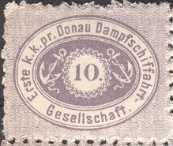
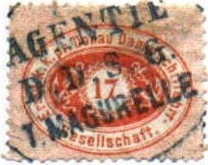
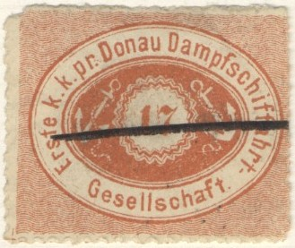
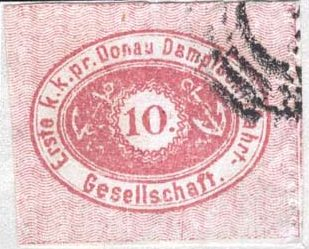

Return To Catalogue - Other steam ship companies of the world
Note: on my website many of the
pictures can not be seen! They are of course present in the
catalogue;
contact me if you want to purchase it.
The Danube Steam Ship Company issued its own stamps from 1866 to 1880. It didn't only serve the cities along the Danube (Donau), but also Constantinopel (nowadays called Istanbul) and other towns near the Black sea. It apparently also served the Austrian consular post and military post.

10 k lilac 10 k green 10 k red 17 k red
ATTENTION: most of these stamps are forgeries or reprints (made in 1877, with perforation 10 or imperforate), by they way I'm not sure if the above stamps are genuine! The genuine stamps should be perforated 9 1/2.
Could the following cancels be genuine, 'AGENTIE D.D.S.G I. MAGURELLE' in an ellipse?:

And a cancel with 'AGENTIE D.D.S.G. ?OM-PALANA':
Stamps with black bars are probalby the cancellation of the remainders.
Reprints were made privately by Ed.Heim in Vienna:

Reprints
Forgeries:
I think the next block of stamps are Spiro forgeries, the '7' is quite different in '17':
Pencancels were never used on genuine stamps (Reduced sizes)

Another example of a 17 k stamp with a weird '7'; genuine stamps
don't have white borders.
I have seen a block of 5x5 10 c green stamps with the same cancel, a line, in that forgery there is no dot behind the '10'.


Probably another Spiro forgery of the 10 k value, note that the
'G' of 'Gesellschaft' is slanting backwards, the 's' of this word
is also rather peculiar. The '10' has no dot behind it.


Other forgery with no dot behind '10' and '17' and perforation 14
instead of 9 1/2.
Some primitive forgeries:

(Forgeries)
Other, more sophisticated forgeries made by the forger Fohl:


Forgeries with overprint 'Falsch!'; Fohl forgeries. The letters
'G' and 'll' of 'Gesellschaft' should not touch the oval above
it. Note that the 'ft' of this word are also different.

Very dubious stamp, probably a forgery. The left top of he '1' is
too long and the bottom of the '7' appears almost flat.
Black Friedl reprint of the Danube
stamps. Block of four.
The following stamps were used for general insurance fees:
1889 In the above design I have seen: 5 black
(violet?), 10 red, 20 blue, 30 lilac, 35 black on grey (value in
red), 40 green, 45 black on grey (value in red), 60 orange and 80
yellow. The values 10, 20 and 80 also exist imperforate
(http://www.philateria.com/html/general_insurance_i.html)
With overprint 'D M' (official stamps?): 5 black on green, 10
black on grey and 50 black on lilac.
They were also issued in double currency (Heller/Filler)
indicated on the stamps in 1889
(http://www.philateria.com/html/general_insurance_i.html).
I was told that this stamp (general duty stamp) was issued in
1875. I've also seen the value 10 blue. Other source
(http://www.philateria.com/html/general_duty.html) say that they
were issued in 1887 in the values 5 kr red, 10 kr blue, 20 kr
green and 50 kr black on orange.
'D.D.S.G. Gepäck Control - Marke' (very large stamps)
I have seen some 'D.D.S.G. Gepack Control Marke',
(parcel stamps). I have seen the values:
Inscription 'Galaz-Braila': 20 bani red, 40 bani
red; a 20 b brown and 40 b brown should also exist.
Inscription 'Braila-Galaz': 20 bani orange, 20
bani green, 40 bani orange, 40 bani green
Inscription 'Ostrov nach Kalaras-Silistria' 40
bani yellow
Inscription 'Silistria nach Ostrov-Kalaras' 40
bani blue
Inscription 'Kalaras nach Ostrov-Silistria' 40
bani brown
Some other fiscal stamps with inscription 'D.G.T.' and value in
'kr', I have seen 3 kr, 4 kr, 5 kr, 6 kr and 10 kr (all in color
red). On http://www.philateria.com/html/austria_d_g_t_.html some
other values are shown: 15 kr blue and 20 kr blue. Also a 3 kr
red imperforate and in the colours green and black (inscription
black): 6 f, 10 f and 20 f.
Some other local stamps were issued with inscription 'Kalabaluk D.D.S.G.' and value in 'CENTIMES' in the values 50 c, 100 c, 150 c, 200 c, 300 c, 400 c, 450 c and 500 c (and 1 F violet?); see http://www.philateria.com/html/kabaluck.html.
Also some stamps with inscription 'Nachzahlungs-Marke D.D.S.G' exist (1884): 3 kr blue, 10 kr red (Ser I), 10 kr red (Ser II), 10 kr red (Ser III), 10 kr red (Ser IV), 10 kr red (Ser V), 10 kr red (Ser VI), 10 kr red (Ser 128). http://www.philateria.com/html/nachzahlungsmarke.html. In a similar design with inscription 'Utanfizetsi-jegy' exists 3 kr red, 5 kr red, 6 kr red and 10 kr red. http://www.philateria.com/html/austria_d_g_h_t.html
Literature: "Danube Steam Navigation Company" by. E.F. Hurt and Denwood N. Kelly, American Philatelic Society Handbook Series, 1950 (64 pages with), contains company history; postal agencies, stamps, forgeries and cancels.

{kind=link}
{kind=link}
{kind=link}
{kind=link}